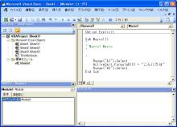

第3回.顧客登録のシートを作成、その前にマクロって何？
エクセルで顧客管理を作ります、
シート「顧客一覧」からシート「顧客登録」に項目名も含めて、自動で作成します、
また逆に、シート「顧客登録」で入力したデータを、シート「顧客一覧」に登録します。
これらは、関数ではできません。
そこで、マクロの登場です。
多少でもマクロを使った事がある人は、あくびが出るかもしれません。
しかし、基本をよく分からずに使っている場合も多いと思います。
まずは、マクロの基本からです。
マクロを使う準備
2007以降の場合は、「開発」タプを表示います。
「オフィスボタン」→「Excelのオプション」→「基本設定」で、
「開発」タブをリボンに表示する、にチェックを付けます。
マクロの記録
１．2003なら、「ツール」→「マクロ」→「新しいマクロの記録」
2007以降、「開発」→「マクロの記録」
「マクロの記録」が表示されます。
２．マクロ名は「Macro1」のままで良いでしょう。「OK」
３．適当なセル、例えば、A1を選択し、「こんにちは」と入力します。
４．2003なら、「ツール」→「マクロ」→「記録終了」
2007以降、「開発」→「記録終了」
これで、マクロが記録されました。
マクロの内容を見る
「Visual Basic Editor」を起動します。
2003なら、「ツール」→「マクロ」→「Visual Basic Editor」
2007以降、「開発」→「Visual Basic」
ショートカットはAlt+F11です。

左上が「プロジェクト」、左下が「プロパティ」、右上が「コード」等になります。
「プロジェクト」に「標準モジュール」が出来ています。
「標準モジュール」を展開すると、「Modure1」があります。
これをダブルクリック、または、F7で、「コード」が表示されます。
中には、
Sub Macro1()
'
' Macro1 Macro
'
'
Range("A1").Select
ActiveCell.FormulaR1C1 =
"こんにちは"
Range("A2").Select
End
Sub
これが、マクロであり、プログラミング言語をVBAと呼びます。
マクロの実行方法
１．エクセルの画面に戻って、A1をクリアし
２．2003なら、「ツール」→「マクロ」→「マクロ」
2007以降、「開発」→「マクロ」
ショートカットは、Alt+F8です。
３．「Macro1」を選択し、「実行」
これで再び、A1に「こんにちは」と入ったはずです。
Macto1のコードの説明
Sub Macro1()
・・・
End Sub
これが１つの単位です、プロシージャーと呼びます。
SubはSubプロシージャーと呼ばれます。
「'」以降は、その行は、コメントとなります。行の途中からでも書くことができます。
Range("A1").Select、A1セルを選択します。
Selectはメソッドと呼ばれます。
ActiveCell.FormulaR1C1 = "こんにちは"、選択セルに「こんにちは」と入れます。
この場合の「=」は、等号というより、値の代入になります。
ActiveCellはオブシェクト、FormulaR1C1はプロパティと呼びます。
さらに、私は、Enterしたので、下のセルA2が選択されました。
モジュールとは
モジュールには、
「シートモジュール」
「ブックモジュール」
「標準モジュール」
「クラスモジュール」
があります。
「シートモジュール」は、シート毎に作成し、そのシートの操作で使用します。
「ブックモジュール」は、ブックに１つで、そのブックの操作で使用します。
「標準モジュール」は、上記のモジュール等で共通で使用します。
「クラスモジュール」は、クラスを作成します。今回のシリーズでは使用しません。
プロシージャーとは
プロシージャーは、procedureであり手順です、一連の手順を記述したものです。
プロシージャーには、SubとFunctionの2種類があります。
Subプロシージャーとは
Sub プロシージャー名(引数)
・・・
End Sub
です、引数は省略できます。
プロシージャーと言った場合は、モジュールの全てを指すことになります。
モジュールの中に複数のサブ(Sub)プロシージャーがあることになります。
また、本当は、スコープが先頭に入り、Private Sub、Public Subとなります。
しかし、スコープを意識したプログラミングは初心者には難しいので、当面は省略します。
省略した場合は、Publicとなり、他のモジュールから参照でき、
Privateの場合は、同一モジュール内のみ参照が可能です。
とりあえず今は気にする必要はないです。
引数は、外部からそのプロシージャーを呼び出した時に、値の引き渡しに使用します。
引数は省略できます。
引数の指定方法は、おいおい説明します。
Functionプロシージャーとは
Function プロシージャー名(引数) As 戻り値のデータ型
・・・
End Sub
Subプロシージャーとの違いは、処理した結果（戻り値）を返すところです。
呼び出す側では、この戻り値を使用します。
例えば、Subでは、処理が正しく行われたかどうかが分かりません。
Functionでは、処理結果を戻すことにより、呼び出し側で判定ができるようになります。
上記以外は、Subと同様と考えて下さい。
オブジェクトとは
オブジェクトは、objectであり、物・物体のことです。
VBAで何か操作をしようとする対象となるものがオブシェクトです。
ブックやシート、そしてセルなどを指します。
プロパティとは
プロパティは、propertyであり、財産・資産のことです。
オブジェクトの持つ財産・資産のことであり、オブジェクトの性質を表すデータです。
セルの持つ値や書式は全て、セルのプロパティです。
メソッドとは
メソッドは、methodであり、方法。方式です。
オブジェクトに対する動作・操作を指定します。
セルを選択する、セルを削除する等です。
今回は、この辺にしておきましょう。
まだまだ説明が足りませんが、今後の説明に必要な最低限の用語として説明しました。
とりあえず、単語だけ覚えてもらえれば良いと思います。
あくまで、説明のなかで突然知らない用語が出てきたー（泣）
という事が無いように説明しました。
また、ネット上には、VBA入門が多数あるので、参考にして下さい。
さて、次回からは、本格的にマクロの作成にはいります。
今回の復讐
モジュール
プロシージャー
Subプロシージャー
Functionプロシージャー
オブジェクト
プロパティ
メソッド
同じテーマ「エクセル顧客管理」の記事
第1回.どんなソフトにするか
第2回.顧客一覧のシートを作成
第3回.顧客登録のシートを作成、その前にマクロって何？
第4回.顧客登録のシートを作成(1)
第5回.顧客登録のシートを作成(2)
第6回.ここまでの復習
第7回.本格的なプログラムへ
第8回.顧客一覧より顧客データを取得
第9回.イベントを使ってマクロを起動させる
第10回.コーディングとデバッグ
第11回.顧客登録より顧客一覧へ更新
新着記事NEW ・・・新着記事一覧を見る
VBA100本ノック 100本目：WEBから100本ノックのリストを取得｜VBA練習問題（3月3日）
VBA100本ノック 99本目：自動席替え（行列と前後左右が全て違うように）｜VBA練習問題（3月2日）
VBA100本ノック 98本目：席替えルールが守られているか確認｜VBA練習問題（3月1日）
VBA100本ノック 97本目：Accessデータを取得（グループ集計）｜VBA練習問題（2月27日）
VBA100本ノック 96本目：Accessデータを取得（マスタ結合&抽出）｜VBA練習問題（2月26日）
VBA100本ノック 95本目：図形のテキストを検索するフォーム作成｜VBA練習問題（2月24日）
VBA100本ノック 94本目：表範囲からHTMLのtableタグを作成｜VBA練習問題（2月23日）
VBA100本ノック 93本目：複数ブックを連結して再分割｜VBA練習問題（2月22日）
VBA100本ノック 92本目：セルの色を16進で返す関数｜VBA練習問題（2月20日）
VBA100本ノック 91本目：時間計算（残業時間の月間合計）｜VBA練習問題（2月19日）
アクセスランキング ・・・ ランキング一覧を見る
1.最終行の取得（End,Rows.Count）｜VBA入門
2.RangeとCellsの使い方｜VBA入門
3.変数宣言のDimとデータ型｜VBA入門
4.マクロって何？VBAって何？｜VBA入門
5.Range以外の指定方法（Cells,Rows,Columns）｜VBA入門
6.セルのコピー&値の貼り付け（PasteSpecial）｜VBA入門
7.繰り返し処理（For Next)｜VBA入門
8.セルに文字を入れるとは（Range,Value）｜VBA入門
9.マクロはどこに書くの（VBEの起動）｜VBA入門
10.とにかく書いてみよう（Sub,End Sub）｜VBA入門
このサイトがお役に立ちましたら「シェア」「Bookmark」をお願いいたします。
記述には細心の注意をしたつもりですが、
間違いやご指摘がありましたら、「お問い合わせ」からお知らせいただけると幸いです。
掲載のVBAコードは動作を保証するものではなく、あくまでVBA学習のサンプルとして掲載しています。
掲載のVBAコードは自己責任でご使用ください。万一データ破損等の損害が発生しても責任は負いません。